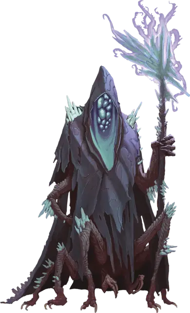

Провидец порождений ядра
Core Spawn Seer
Средняя Аберрация, хаотично-злая

Класс Доспеха 17 (природный доспех)
Хиты 153 (18к8 + 72)
Скорость 30 футов
| мод | спас | ||
|---|---|---|---|
| СИЛ | 14 | +2 | +2 |
| ЛОВ | 12 | +1 | +6 |
| ТЕЛ | 18 | +4 | +4 |
| мод | спас | ||
|---|---|---|---|
| ИНТ | 22 | +6 | +11 |
| МДР | 19 | +4 | +9 |
| ХАР | 16 | +3 | +8 |
Навыки Восприятие +9
Иммунитет к урону психическая энергия
Чувства слепое зрение 60 футов, пассивное Восприятие 19, чувство вибрации 60 футов
Языки Общий, Глубинная речь, Подземный, Телепатия 120 фт.
Опасность 13 (10000 опыта)
Бонус мастерства +5
Особенности
Скольжение по земле. Провидец может проходить сквозь немагическую, необработанную землю и камень. Делая это, провидец не разрушает материал, через который он проходит.
Сопротивление магии. Провидец совершает с преимуществом спасброски от заклинаний и прочих магических эффектов.
Действия
Мультиатака. Провидец дважды использует Расщепляющий посох, дважды использует Психоделическую сферу или каждый из них по одному разу.
Расщепляющий посох. . Рукопашная атака оружием: +8 к попаданию, досягаемость 5 футов, одно существо. Попадание: 9 (1к6 + 6) дробящего урона плюс 18 (4к8) урона излучением, и цель падает ничком.
Психоделическая сфера. Провидец метает мерцающий шар в одно существо, которое он может видеть в пределах 120 футов. Цель должна преуспеть в спасброске Мудрости Сл 19, иначе получит 27 (5к10) урона психической энергией и страдает от случайного состояния до начала следующего хода провидца. Бросьте к6 для определения состояния:
• 1-2: Ослеплён;
• 3-4: Испуган;
• 5-6: Ошеломлён.
Реакции
Отложенный урон. Когда по провидцу попадают атакой, он получает только половину наносимого урона. В первый раз, когда провидец попадает рукопашной атакой в свой следующий ход, цель дополнительно получает 1к6 урона излучением.
Описание
Провидец порождений ядра - это гуманоидные арканисты, развращенные сверхъестественной силой Древнего Зла посредством богохульных ритуалов или кровавых встреч. Разрушенные потусторонним излучением и болезнями, их тела покрыты ужасными выступами флуоресцентных кристаллов, которые испускают психоделическое свечение из-под изодранных складок их одежд.
Порождения ядра
Древнее Зло нападает на мультивселенную загадочными и разрушительными способами. Иногда они проникают на Материальный план, используя непостижимую энергию и тьму, обитающие в глубинах мира. Эти земные проявления отвратительных инопланетных замыслов известны как порождения ядра, и они столь же разнообразны по своей физиологии, сколь и ужасны.
Их концентрация в пустынных землях Блайтшора делает порождений ядра проблемой для исследований, и многие из тех кто пытался наблюдать или изучать этих кошмарных существ, редко возвращаются. Те, кто все-таки возвращается, часто являются оболочками своих прежних "я", которые говорят об ужасающих подземных лабиринтах извилистых пещер и кошмарных гнездах, куда других обитателей Мискат Стрэнда тащат вниз для какой-то адской цели.
Порождение Катастрофы. Аберрации, известные как порождения ядра, представляют собой подземную породу вестников, слуг, пехотинцев и лейтенантов Древнего Зла, пробужденных в глубинах катастрофическими действиями Богов-Предателей и их приспешников. Они часто появляются на поверхности планеты в результате сейсмических событий, таких как то, что создало бездонную Пропасть Мискат в Восточном Винандире. Колдуны и культисты иногда собираются вместе, чтобы ускорить прибытие порождений ядра на Материальный план, сосредотачивая свою мистическую силу на областях естественной сейсмической нестабильности, когда знаки и звезды правильно выстроены.